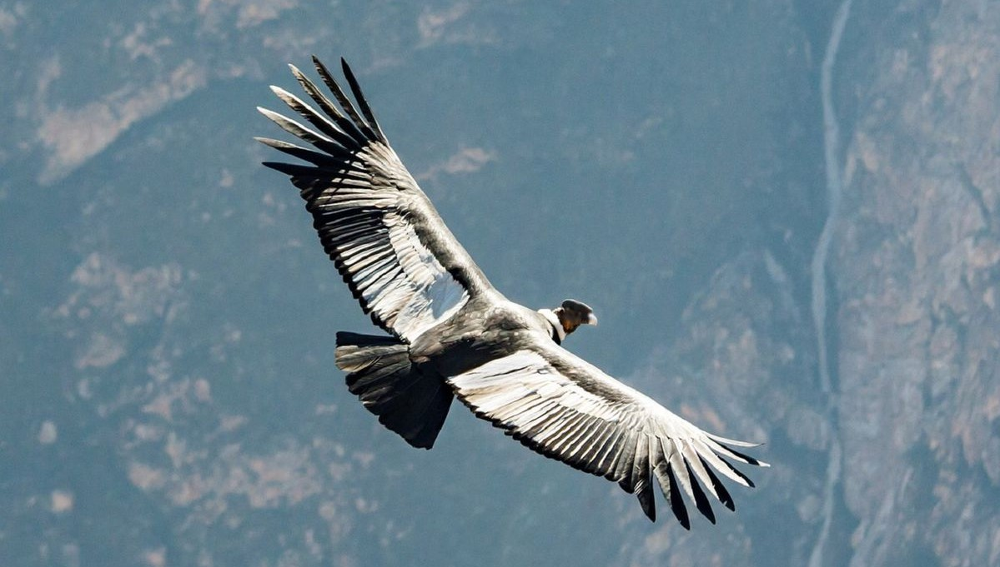
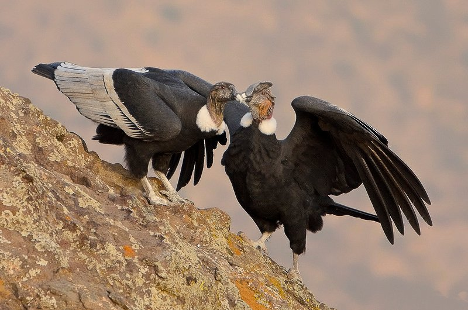

"Ser emblemático y majestuoso..."
De la serie "Habitantes Maravillosos"
 He presentado habitantes maravillosos de todo el mundo, pero hoy vengo a casa para montar la escena de esta historia.
He presentado habitantes maravillosos de todo el mundo, pero hoy vengo a casa para montar la escena de esta historia.En nuestras montañas de los Andes, en América del Sur, existe una especie que protagoniza leyendas antiguas, tiene una responsabilidad valiosísima para la naturaleza y cuenta con muchos títulos de ser "el que más, el mayor..." en muchas cosas.
Esta criatura parece ser capaz de detener el reloj cuando aparece en el cielo como por arte de magia. Sus tonos negros y blancos se muestran y esconden entre nubes y picos montañosos, muy juguetonamente, misteriosos y presuntuosos de todo su porte... Los espectadores se fascinan ante la majestuosa presencia de este habitante maravilloso… Vultus Gryphus... o el Cóndor Andino.
Probablemente ya conozcas el primer hecho que les voy a presertar: es el ave de mayor tamaño en todo el mundo: los machos suelen alcanzar casi 1.5 metros desde el pico a la cola, 1 metro de altura e increíblemente 3 metros, más o menos, desde una ala a la otra. El peso normal de los machos ronda entre los 10 y los 15 kilos.
Pero eso no es todo: el Cóndor Andino es una de las aves más longevas , pudiendo vivir hasta los 75 años.
 Para continuar la lista, también es el ave con la mayor capacidad de altura de vuelo. Puede alcanzar los 6.500 metros de altitud usando corrientes verticales de aire cálido.
Para continuar la lista, también es el ave con la mayor capacidad de altura de vuelo. Puede alcanzar los 6.500 metros de altitud usando corrientes verticales de aire cálido.También es un maestro en el ahorro de energía: puede planear cientos de metros con sus alas desplegadas y sin mover un sólo músculo. Puede sostener esto por más de 5 horas, y si elige la ruta muy bien, puede cubrir más de 170kms. Resulta pues, que el esfuerzo de batir las alas es extremadamente duro para el cóndor, así que el despegue le demanda al menos el 75% de su energía, permaneciendo en posición de planeo por el resto del tiempo y aleteando sólo de vez en cuando.
Ellos son carroñeros, es decir que se alimentan de piel y tejido de animales muertos que desgarran a pedazos. Esta especial y asquerosa tarea ayuda a los carroñeros menores a hacer su parte en el proceso, porque los cóndores pueden abrir el abdomen directamente, proporcionando acceso a los órganos internos más rápido. De otro modo, los carroñeros de menor tamaño tendrían un "largo camino" que recorrer, pero no te preocupes! Voy a reservar los perturbadores detalles para "mi lado más oscuro". Entonces, si un cóndor se encuentra cerca del "final de la existencia" de un desafortunado animal, podríamos decir que será un festín para todos los carroñeros!
Incluso aunque todo esto suena horrible, lo cierto es que permite borrar los signos de la muerte de otras especies en la naturaleza y a su vez la prevención de ciertos tipos de bacterias que podrían dañar a los humanos o causarles enfermedades. Gracias Cóndores!!!
Un sólo cóndor puede comer 5 kilos de carne por día, pero también puede ayunar por un periodo de cinco semanas. Su habilidad para ver a larga distancia es primordial para sustentar su alimentación.

Una vida sagrada y eterna
Los Incas creían que el Cóndor andino era quien transmitía y entregaba sus plegarias a los Dioses, y por ende, lo consideraban un ser sagrado. También pensaban que el cóndor era inmortal. El mito decía que cuando el cóndor era anciano y se estaba quedando sin fuerzas, se posaba en la cima de la montaña más alta y se dejaba caer al vacío, dando lugar a su muerte simbólica y renaciendo en su nido...
Señor de la vida, del sol y las montañas
Los Aymaras creían que el cóndor era el espíritud de las montañas y desde allí podía dominar los recursos naturales necesarios para la vida. Ellos defendían la creencia que el cóndor enviaba el agua desde los Andes para el crecimiento de las plantas y que era responsable de la salida del sol cada día, que él podía de alguna manera sujetarlo y moverlo en el cielo sobre las montañas con su energía imparable… Para ellos, el Cóndor representaba la fuente de la vida.
Tal vez sí conservamos en nuestros corazones la apreciación, la admiración y todos los sentimientos que nuestros poblaciones más antiguas transmitieron generación por generación por el Cóndor Andino.

Gracias por leerme!!
Espero que hayas disfrutado mucho mi trabajo! No sólo redacté el texto del post sino que también escribí el código de la página web y su diseño. El desafío es grande pero soy una estudiante muy estusiasta. :)
Por favor, dame tu "ME GUSTA" y COMPARTÍ la publicación para ayudarme a expandir la comunidad de habitantes maravillosos! Si accedes a través de una computadora, recordá que podés dejar tu comentario al final de la página. O podés enviarme un e-mail, si querés!. De cualquier manera que prefieras voy a apreciar mucho tu apoyo!.
Si te gustó el tema, te invito a leer el contenido BONUS debajo.
Por ejemplo, para mi total sorpresa, los cóndores son mudos! . Tienen la siringe (órgano vocal organ de las aves) dañado. Apuesto a que no sabías esto, cierto!? Yo tampoco, claramente!
Otra cosa es que el Cóndor Andino suele defecar u orinar sobre sus patas para refrescarse de la alta temperatura. Este procedimiento se denomina "urohidrosis", y es la razón por la que sus patas se encuentran teñidas de blanco muchas veces (por el ácido úrico). Esta práctica es común entre los carroñeros.
Por supuesto, no quisiera que recordaras al Cóndor Andino como una especie desagradable que se hace pis o caca encima, jejeje, así que voy a cerrar con algo romántico para balancear la historia.
Los cóndores andinos son leales a su pareja. Son monógamos y hacen realidad la expresión “hasta que la muerte nos separe”.. Pueden tener una cara fea, pero los modales de un dulce y sensible caballero pueden conquistar a cualquiera! He aquí "un beso de enamorados con mal aliento", (pues sí!).

Sin más que hacer, me despido por ahora! Hasta el próximo post!
Algunas fuentes:
"Cóndor: una especie clave en el equilibrio del ecosistema andino"
"Cóndor Andino"
Protocolo de Reproducción del Cóndor Andino en Cautiverio
"Increíble descubrimiento argentino sobre el cóndor andino"
"Conocer y Disfrutar el Cóndor"